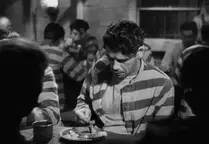
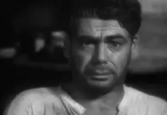
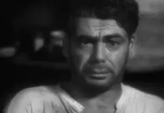

Drama
O drama engloba vários âmbitos do aspecto humano e da vida em sociedade: pobreza, injustiças raciais, relacionamentos conturbados, perturbações de ordem psicológica, identidade de gênero, a dor da guerra e muito mais.
Na década de 30 surgiram muitos registros dramáticos importantes para a história do cinema. Um deles foi I Am a Fugitive From a Chain Gang, de 1932, dirigido por Mervyn LeRoy.


